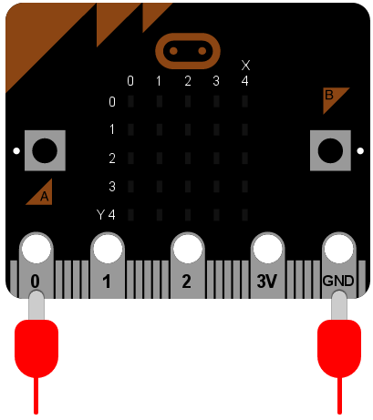

Hudba¶
MicroPython na BBC micro:bite obsahuje nadupaný modul na hudbu a zvuky. Generovať zvuky je veľmi jednoduché, ak pripojíš reproduktor. Prepoj krokodílkami piny 0 a GND s kladným a záporným vstupom do reproduktora - nezáleží na tom, v akom poradí sú pripojené.
Poznámka
Toto neskúšaj s Piezo bzučiakom - tieto bzučiaky vedia hrať iba jeden tón.
Poďme zahrať nejakú hudbu:
import music
music.play(music.NYAN)
Všimni si, že importujeme modul music („hudba“). Ten obsahuje metódy na vytváranie a ovládanie zvuku.
MicroPython má dosť veľa vstavaných melódií. Tu je ich kompletný zoznam:
music.DADADADUMmusic.ENTERTAINERmusic.PRELUDEmusic.ODEmusic.NYANmusic.RINGTONEmusic.FUNKmusic.BLUESmusic.BIRTHDAYmusic.WEDDINGmusic.FUNERALmusic.PUNCHLINEmusic.PYTHONmusic.BADDYmusic.CHASEmusic.BA_DINGmusic.WAWAWAWAAmusic.JUMP_UPmusic.JUMP_DOWNmusic.POWER_UPmusic.POWER_DOWN
Vezmi si ukážkový kód a zmeň melódiu. Ktorá je tvoja obľúbená? Vedel(a) by si nejako využiť takéto melódie ako signály?
Wolfgang Amadeus Microbit¶
Vytváranie vlastných melódií je jednoduché!
Každá nota má svoj názov (napríklad C# alebo F), oktávu (tá hovorí MicroPythonu ako vysoko alebo nízko má daný tón zahrať) a dĺžku (ako dlho má trvať). Oktávy sú označený číslom ~ 0 je najnižšia oktáva, 4 obsahuje stredné C a 8 je tak vysoko, že to nikdy nevyužiješ. Teda pokiaľ nebudeš komponovať hudbu pre psov. Dĺžka tónu je tiež vyjadrená číslami. Čím vyššia hodnota, tým dlhšie bude trvať. Tieto hodnoty navzájom súvisia - napríklad dĺžka trvania 4 bude trvať dvakrát tak dlho ako 2 (a tak ďalej). Ak použiješ notu R, vtedy MicroPython zahrá pomlčku (t.j. ticho) so zvolenou dĺžkou (trvaním).
Každá nota je vyjadrená takýto reťazec znakov:
NOTE[octave][:duration]
Napríklad, "A1:4" znamená, že nota A v oktáve 1 má byť zahranás dĺžkou trvania 4.
Priprav zoznam nôt, pomocou ktorého vytvoríš melódiu (je to podobné, ako vytváranie animácie pomocou zoznamu obrázkov). Napríklad takto dosiahneš, že MicroPython zahrá úvod pesničky „Frere Jacques“:
import music
tune = ["C4:4", "D4:4", "E4:4", "C4:4", "C4:4", "D4:4", "E4:4", "C4:4",
"E4:4", "F4:4", "G4:8", "E4:4", "F4:4", "G4:8"]
music.play(tune)
Poznámka
MicroPython vie takéto melódie zjednodušiť. Zapamätá si oktávu a dĺžku trvania, až kým ich nezmeníš. Vďaka tomu, vyššie uvedený príklad môžeš zapísať aj takto:
import music
tune = ["C4:4", "D", "E", "C", "C", "D", "E", "C", "E", "F", "G:8",
"E:4", "F", "G:8"]
music.play(tune)
Všimni si, ako sa oktáva a trvanie menia iba vtedy, keď musia. Musíme tak omnoho mneje písať a je to navyše ľahšie aj na čítanie.
Zvukové efekty¶
MicroPython ti umožní vytvárať aj tóny, ktoré nie sú hudobnými notami. Tu je príklad, ako vytvoriť efekt policajnej sirény:
import music
while True:
for freq in range(880, 1760, 16):
music.pitch(freq, 6)
for freq in range(1760, 880, -16):
music.pitch(freq, 6)
Všimni si, ako sme v tomto prípade použili metódu music.pitch. Táto metóda očakáva frekvenciu ako argument. Napríklad frekvencia 440 je komorné A, ktoré sa používa pri ladení orchestra.
V tomto príklade používame funkciu range na vytvorenie postupnosti číselných hodnôt. Tieto čísla sa používajú na definovanie farby tónu. Tri argumenty pre funkciu range sú začiatočná hodnota, koncová hodnota a krok. Preto tam, kde používame range prvýkrát hovorím po slovensky „vytvor postupnosť čísel medzi 880 a 1760 s krokom 16“. Pri druhom použití hovoríme „vytvor postupnosť hodnôt medzi 1760 a 880 s krokom -16“. Takto vytvoríme postupnosť frekvencií, ktoré stúpajú a klesajú v tóne rovnako ako policajná siréna.
A keďže siréna môže trvať donekonečna, zabalili sme ju do nekonečného while cyklu.
Práve sme si predstavili nový druh cyklu vo vnútri while cyklu: for cyklus. Po slovensky by sme namiesto neho povedali niečo takéto: „s každým prvkom v nejakej zbierke prvkov urob nejakú aktivitu“. Konkrétne, v uvedenom príklade by to bolo asi takto: „s každou frekvenciou v definovanej postupnosti frekvencií zahraj tón tej frekvencie v dĺžke 6 milisekúnd“. Všimni si, že to, čo sa má diať s každou položkou v cykle, je odsadené (ako sme hovorili už v predchádzajúcich návodoch), takže Python vie presne, ktorú časť kódu má spustiť pre každú položku.